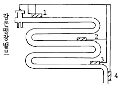

수산제조기사 (2004-05-23 기출문제)
1과목: 식품위생학
1. 다음의 세균 중 식품취급자의 손, 피부, 인후염 등을 통하여 식품에 가장 오염되기 용이한 것은?
- Escherichia coli
- Salmonella spp.
- Staphylococcus aureus
- Shigella spp.
(정답률: 알수없음)

2. 대장균의 정성, 정량 검사법으로 사용되는 선택 배지는?
- Lactose broth
- BGLB broth
- Deoxycholate agar
- EC broth
(정답률: 알수없음)
3. 다음 식물성 식중독의 원인성분과 식품의 연결이 바르지 않는 것은?
- 솔라닌(solanine) - 감자
- 아미그달린(amygdalin) - 청매
- 무스카린(muscarine) - 버섯
- 셉신(sepsine) - 고사리
(정답률: 알수없음)
4. 파리에 의하여 전파되는 질병과 가장 관계가 먼 것은?
- 장티푸스
- 파라티푸스
- 이질
- 발진티푸스
(정답률: 알수없음)
5. 라면 등의 식품에서 지나친 건조에 의해 발생할 수 있는 가장 중요한 위생문제는?
- 지방의 산화
- 단백질 변성
- 전분의 노화
- 무기질 산화
(정답률: 알수없음)
6. 식품오염에 문제가 되는 방사성 물질과 거리가 먼 것은?
- 90Sr
- 137Cs
- 131I
- 12C
(정답률: 알수없음)
7. 다음의 식품 첨가물 중 유화제로 사용되지 않는 것은?
- soybean lecithin
- glycerin fatty acid ester
- morpholine fatty acid salt
- sucrose monosterate
(정답률: 알수없음)
8. 복어 식중독의 독성물질로서 맞는 것은?
- 히스타민(histamine)
- 프토마인(ptomaine)
- 테트로도톡신(tetrodotoxin)
- 아마니타톡신(amanitatoxin)
(정답률: 알수없음)
9. 공장폐수에 포함된 수은이 환경수를 오염시켜 식품오염으로 연결된다. 다음 중 설명이 틀린 것은?
- 무기수은은 재질에 포함되어 있는 세균에 의하여 메틸수은이 된다.
- 생체내에서는 무기수은은 유기수은으로 변하는 일은 없다.
- 유기수은은 무기수은보다 생체 축적성이 크다.
- 머리카락중의 총수은량으로 메틸수은 중독을 진단하는 기준으로 쓸 수 있다.
(정답률: 알수없음)
10. 합성수지제 식품용기를 소독하는 방법으로 가장 부적당한 것은?
- 열탕소독(90℃, 5분)
- 건열살균(150℃, 30분)
- 염소소독
- 역성비누액살균
(정답률: 알수없음)
11. 식품에 대한 방사선조사에 관한 설명으로 옳지 않은 것은?
- Co-60을 선원으로 한 γ선이 식품조사에 가장 널리 이용된다.
- 병원균의 살균을 위해서는 발아 억제를 위한 조사에 비해 높은 선량이 필요하다.
- 방사선 조사시 바이러스는 해충에 비해 민감하다.
- WHO/FAO는 식품의 선도 연장, 병원균살균, 특성 개선 등을 위한 중선량 조사의 선량은 1∼10kGy라고 했다.
(정답률: 알수없음)
12. 고시폴(gossypol)은 식물독으로서 정제과정에서 제거되는데 다음 어느 것에 함유되어 있는가?
- 미강유
- 들기름
- 면실유
- 콩기름
(정답률: 알수없음)
13. 미생물에 의한 단백질의 변질시 생성되는 물질이 아닌 것은?
- 암모니아
- 아민류
- 페놀
- 젖산
(정답률: 알수없음)
14. 효모의 증식에 영향을 주지 않는 보존제는?
- Sorbic acid
- Parabens
- Dehydroacetic acid(DHA)
- Propionic acid
(정답률: 알수없음)
15. 주로 채소를 통하여 매개되는 기생충은?
- 십이지장충
- 간디스토마
- 민촌충
- 선모충
(정답률: 알수없음)
16. 대장균군에 대한 최확수법에 대한 설명으로 옳지 않은 것은?
- 최확수란 이론적으로 가장 가능한 수치를 말한다.
- 대장균군수는 희석한 시료를 유당배지 발효관에 접종하여 실험한다.
- 유당배지 발효관 중 가스생성 여부에 따라 확률적인 대장균의 수치를 산출하고 최확수로 나타낸다.
- 실험결과, 최확수표에서 직접 구하는 대장균군수는 시료 1㎖에 대한 것이다.
(정답률: 알수없음)
17. 인축공통 전염병이 아닌 것은?
- 야토병(tularemia)
- 탄저(anthrax)
- 파상열(brucelloses)
- 콜레라(cholera)
(정답률: 알수없음)
18. 다음 물질을 식품에 첨가했을 때 착색효과와 영양강화 현상을 동시에 나타낼 수 있는 것은?
- 아스코르빈산(ascorbic acid)
- 캐러멜(caramel)
- 베타카로틴(β -carotene)
- 비타민(Vitamin) C
(정답률: 알수없음)
19. 식품공장의 식품취급 시설에 관한 설명으로 옳지 않은 것은?
- 식품과 직접 접촉하는 부분은 위생적인 내수성 재질이어야 한다.
- 식품 제조가공에 필요한 기계 및 기구류에 대해서는 특별한 기준이 없으므로 임의로 선택하여 사용할 수 있다.
- 식품과 직접 접촉하는 부분은 열탕, 증기, 살균제 등으로 소독· 살균이 가능한 것이어야 한다.
- 냉동· 냉장시설 및 가열처리 시설에는 온도계 등을 설치하여 온도관리를 해야 한다.
(정답률: 알수없음)
20. 식품가공 공장의 바닥, 수구 등에 관한 설명 중 틀린 것은?
- 바닥은 내수성이고 청소하기에 편리하여야 된다.
- 바닥은 물이 잘 빠지도록 경사가 필요하다.
- 배수구는 U자형으로 하는 것이 좋다.
- 배수구는 벽과 평행하여 밀착되게 설치하되 깊이는 15m 이상 되게 한다.
(정답률: 알수없음)
2과목: 수산화학
21. 엑스분(extractives)과 관계 없는 것은?
- 정미성분
- 저분자 질소화합물
- 색소
- 유기산
(정답률: 알수없음)
22. 다음 중 다시마에 함유되어 있는 혈압강하성분은?
- 라민닌(Laminine)
- 도모익산(Domoic acid)
- 카이닉산(Kainic acid)
- 파이코빌린(Phycobilin)
(정답률: 알수없음)
23. 탈아미노반응에 의해 포화지방산과 암모니아가 생성되는 것은？
- 산화적 탈아미노반응
- 환원적 탈아미노반응
- 직접적 탈아미노반응
- 간접적 탈아미노반응
(정답률: 알수없음)
24. 어류의 근원섬유 단백질 중 함량 비율이 가장 높은 것은?
- 미오신(myosin)
- 액틴(actin)
- 트로포닌(troponin)
- 액티닌(actinin)
(정답률: 알수없음)
25. 다음 중 자가소화에 의한 어육 연화의 원인이 아닌 것은?
- 멜라닌(melanin) 색소의 분해
- 근원섬유의 소편화
- 코넥틴(connectin)의 분해
- 단백질 분해효소의 작용
(정답률: 알수없음)
26. 다음 중 글리코겐(glycogen)의 혐기적 해당작용으로 생성되어 신선 어육의 pH 변화에 크게 영향을 미치는 것은?
- 초산(Acetic acid)
- 구연산(Citric acid)
- 젖산(Lactic acid)
- 호박산(Succinic acid)
(정답률: 알수없음)
27. 냉동품의 냉동변성을 방지하는데 효과적인 물질은?
- 염산
- 알코올
- 축합인산염
- 유기산
(정답률: 알수없음)
28. 연제품의 저장 중에 제품의 표면에서 발생하는 점액 반점의 화학성분은?
- Dextran
- Fructan
- Galactomannan
- Inulin
(정답률: 알수없음)
29. Oleic acid의 분자식은?
- C18H34O2
- C18H36O2
- C16H32O2
- C16H30O2
(정답률: 알수없음)
30. 어류 근육 중의 결합수(結合水)에 대한 설명으로 틀린 것은?
- 0℃에서 얼지 않는다.
- 전체 수분이 15-25%를 차지한다.
- 지방질과 결합한 상태로서 존재한다.
- 증기압법으로 측정한다.
(정답률: 알수없음)
31. 어류의 사후변화에 있어서 어육의 pH값이 변화하는 모양은?
- 일단 내려갔다가,다시 올라간다.
- 일단 올라갔다가,다시 내려간다.
- 변동이 없고 거의 일정하다.
- 지방함량이 많으면 올라가고,적으면 내려간다.
(정답률: 알수없음)
32. 오징어,전복등 연체류를 가열할 때 일반적인 무게의 감소는?
- 10%미만
- 10-20%
- 35-40%
- 약50%
(정답률: 알수없음)
33. 다음 어유 성분 중 특수 윤활유로 쓰이는 것은?
- monoglyceride
- cetyl alcohol
- wax
- squalene
(정답률: 알수없음)
34. 다음 중 사후경직을 연장시키는 방법은?
- 완만동결을 실시하는 것
- 상온으로 유통시키는 것
- 어획 직후 내장을 제거하는 것
- 자가소화를 촉진시키는 것
(정답률: 알수없음)
35. 다음 어패류 중 다당류의 함량이 가장 많은 것은?
- 명태
- 피등어 꼴두기
- 새우
- 굴
(정답률: 알수없음)
36. 해산어의 냄새와 관계 없는 성분은?
- 피페리딘
- 요오드취
- TMA
- 암모니아
(정답률: 알수없음)
37. struvite의 조성을 바르게 나타낸 것은?
- Mg(NH4)PO4.6H2O
- Mg(H2PO4)2.4H2O
- MgHPO4.6H2O
- MgH2P2O7.4H2O
(정답률: 알수없음)
38. 연어,송어의 육 색소는?
- astaxanthin
- hemocyanin
- astacene
- myoglobin
(정답률: 알수없음)
39. 수산물 가공원료의 선도지표로 가장 많이 활용되고 있는 것은?
- 휘발성 염기질소값
- K값
- 인돌값
- 아미노질소값
(정답률: 알수없음)
40. 다음 중 무척추동물 특유의 근원섬유 단백질은?
- 파라미오신(paramyosin)
- 액티닌(actinin)
- 트로포미오신(tropomyosin)
- 데스민(desmin)
(정답률: 알수없음)
3과목: 수산가공학
41. 가다랑어 엑스분을 가공할 때 가장 문제점은 다음 중 어느 것인가?
- 탈지
- 탈색
- 탈취
- 콜라겐의 용출
(정답률: 알수없음)
42. 다음 중 저장을 주목적으로 한 훈연법은?
- 온훈법(Hot smoking)
- 냉훈법(Cold smoking)
- 속훈법(Quick smoking)
- 전훈법(Electric smoking)
(정답률: 알수없음)
43. 게 통조림의 제조시 청변육이 생기는 원인은?
- 통조림 용기와 접촉하여 청변육이 생긴다.
- 수중세균이 게육에 오염이 되었을 때 세균의 분해작용으로 인하여 생성된다.
- 구리를 함유하는 혈색소인 Hemocyanin의 원인으로 생성된다.
- 게육질에 함유하는 혈색소인 Hemoglobin의 원인으로 생성된다.
(정답률: 알수없음)
44. 수산 훈제품 가공시의 훈연 조건 중 틀린 것은?
- 냉훈법은 1∼3주간 훈연한다.
- 온훈법은 2∼12시간 훈연한다.
- 냉훈법의 온도는 5∼10℃ 정도이다.
- 온훈법의 온도는 50∼80℃ 정도이다.
(정답률: 알수없음)
45. 마른간법의 장점이 아닌 것은?
- 염장에 특별한 설비가 필요없다.
- 용염량에 비하여 탈수량이 많다.
- 염장중 공기와 접촉하지 않으므로 지방의 산화가 적다.
- 소금의 삼투가 빠르며 염장초기의 부패가 적다.
(정답률: 알수없음)
46. 다음 중 훈연하는 목적이 아닌 것은?
- 색, 향을 좋게 한다.
- 저장성을 높인다.
- 육의 결착성을 높인다.
- 항산화성을 가진다.
(정답률: 알수없음)
47. 식해류(cured fermented fish with cooked rice)의 특성이 아닌 것은?
- 식해 제조시 전분 원료를 첨가한다.
- 식해는 어체내의 자가효소에 의해 주로 발효, 숙성된다.
- 식해는 산미가 젓갈에 비하여 강하다.
- 식해는 유산 발효에 의해 주로 숙성, 발효된다.
(정답률: 알수없음)
48. 어체의 등뼈를 따라 좌우로 2매의 육편을 편뜨기하고, 한장의 뼈판이 남도록 칼질한 것으로 세겹 편뜨기라고도 하는 것은?
- dressed
- semi-dressed
- slice
- fillet
(정답률: 알수없음)
49. KCl을 가할 때 겔화하여 침전하는 카라기난은?
- ι - 카라기난
- λ - 카라기난
- β - 카라기난
- κ - 카라기난
(정답률: 알수없음)
50. 플라스틱 포장식품의 저장 중 품질변화가 아닌 것은?
- 냄새의 변화
- 탈습에 의한 무게의 감소
- 색택의 암색화
- 숙성에 의한 향미의 증진
(정답률: 알수없음)
51. 연제품의 일반적인 가열살균온도는?
- 중심온도 50℃ 이상
- 중심온도 60℃ 이상
- 중심온도 70℃ 이상
- 중심온도 80℃ 이상
(정답률: 알수없음)
52. 껍질을 붙인 마른새우(boiled-dried shrimp)의 자숙방법을 옳게 설명한 것은?
- 세척한 원료를 2%전후의 끓는 식염수에 넣어 새우가 부상할 때 까지 자숙한다.
- 세척한 원료를 4%전후의 끓는 식염수에 넣어 새우가 부상할 때 까지 자숙한다.
- 세척한 원료를 6%전후의 끓는 식염수에 넣어 새우가 부상할 때 까지 자숙한다.
- 세척한 원료를 8%전후의 끓는 식염수에 넣어 새우가 부상할 때 까지 자숙한다.
(정답률: 알수없음)
53. 내부가열방식으로 단시간에 해동되는 장점이 있는 해동법은?
- 전기해동법
- 접촉해동법
- 조합해동법
- 수중해동법
(정답률: 알수없음)
54. 어육연제품 제조시 강한 탄력을 얻기 위한 적정 pH는?
- pH 3 – 4
- pH 5.0 - 6.0
- pH 6.5 – 7.5
- pH 8.0 이상
(정답률: 알수없음)
55. 게맛어묵류의 제조에 있어서 고기갈이할 때 첨가제의 역할을 설명한 것 중 틀린 것은?
- 식염은 탄력 형성에 관여한다
- 미림과 소주는 풍미에 관여한다
- 인산염은 보수성을 높인다
- CaCO3는 색소퇴색방지에 관여한다
(정답률: 알수없음)
56. 다음 중 활성포장시스템이 아닌 것은?
- 산소흡수제
- 에탄올발산제
- 환경기체의 조절
- 온도의 제어
(정답률: 알수없음)
57. 마른살 오징어의 백분은 육중의 엑스분이 표면에 석출된 것으로 고르게 적당히 생성되어 있으면 맛이 좋은 우량품이 된다. 백분을 많이 생성시키는 방법이 아닌 것은?
- 처음 습도가 낮은 곳에서 건조한다.
- 잠재움 등으로 수분을 확산시킨다.
- 습도가 낮은 곳에 비교적 고온에서 저장한다.
- 습도를 높게 하여 비교적 저온에 저장한다.
(정답률: 알수없음)
58. 시간· 온도· 허용한도 (T.T.T)란?
- 저온 저장식품의 품질한계 상수
- 저온 저장식품의 품질기준 상수
- 저온 저장식품의 품질, 저장기간, 품온관계상수
- 저온 저장식품의 저장기간, 품질변화량 관계상수
(정답률: 알수없음)
59. 비교적 선도가 좋지 못한 어류를 염장할 때 어체처리 방법으로서 가장 옳은 것은?
- 턱에서 복강까지 갈라 내장 제거
- 가슴에서 복강까지 갈라 내장 제거
- 가슴에서 꼬리까지 갈라 내장 제거
- 턱에서부터 꼬리까지 갈라서 내장 제거
(정답률: 알수없음)
60. 건조식품의 안전보장 수분함량은?
- 자유수영역 수분함량
- 모관응축수영역 수분함량
- 단분자층흡착수영역 수분함량
- 다분자층흡착수영역 수분함량
(정답률: 알수없음)
4과목: 통조림제조학
61. 고등어 보일드 통조림을 제조할 때 혈액제거를 하는 주 목적은?
- 살재임 작업을 쉽게 하기위하여
- 제조후의 제품의 색택보호를 위하여
- 공정 중 어육이 흩여지는 것을 방지하기 위하여
- 액즙의 혼탁과 curd의 생성을 방지하기 위하여
(정답률: 알수없음)
62. High retort pouch 식품의 적당한 살균온도 및 시간은?
- 100~110℃, 2~10분
- 110~120℃, 2~5분
- 120~130℃, 2~5분
- 130℃ 이상, 2~10분
(정답률: 알수없음)
63. 미생물의 사멸율을 나타내는 값을 D값이라 한다. 이 때 D212=10의 의미가 바르게 표시된 것은? (D: decimal reduction time)
- 212℉에서 주어진 미생물의 10%를 사멸시켰다는 뜻
- 212℉에서 주어진 미생물의 90%를 사멸시켰다는 뜻
- 212℉에서 주어진 미생물의 90%를 사멸시키는데 10분 소요되었다는 뜻
- 212℉에서 주어진 미생물의 100%를 사멸시키는데 10분 소요되었다는 뜻
(정답률: 알수없음)
64. 통조림의 배기방법으로 적합하지 않는 것은?
- 가열배기법
- 화학적 배기법
- 기계적 배기법
- 증기분사법
(정답률: 알수없음)
65. 해동할 때 일어나는 일반변화와 관계 없는 것은?
- drip 현상
- 영양분의 산화
- 미생물의 작용
- 향미 증진
(정답률: 알수없음)
66. 가열살균을 마친 통조림을 급히 냉각해야 하는 이유가 아닌 것은?
- 내용물의 조직을 연하게 만들기 위함이다.
- 내용물의 과열에 의한 조직이 연하게 되는 것을 막기 위함이다.
- 유화수송의 발생을 적게 하기 위함이다.
- 호열성균을 사멸시키기 위함이다.
(정답률: 알수없음)
67. 육류를 가열할때 발생하는 H2S에 대하여 설명한 것 중 옳지 못한 것은?
- 육의 pH가 산성일때 적고 알칼리성 일때 많이 발생한다.
- 자가소화 중에서 H2S는 발생하지 않는다.
- 일반적으로 고등동물의 근육보다 어육이 더 많은 H2S를 발생한다.
- 연체류(軟體類)는 어육에 비하여 H2S의 발생이 적다.
(정답률: 알수없음)
68. 통조림 식품의 flat-sour형 변패 원인균은?
- Bacillus stearothermophilus
- CIostrium nigrificans
- Polymyxa
- Saccharomyces cervisiae
(정답률: 알수없음)
69. 다음 중 관내부의 압력이 관외부의 압력보다 커져서 그 차이가 관의 탄성한계를 넘어설 때 생기는 영구적 현상은?
- Buckled can
- Panelled can
- Swell(또는 Blower)
- Flipper
(정답률: 알수없음)
70. Fo-값의 설명 중 옳은 것은?
- 세균을 121.1℃에서 원하는 만큼 사멸시키는데 필요한 시간
- 일정 온도에서 마치 121.1℃에서 원하는 만큼 사멸시키는 것과 같이 세균을 사멸시키는데 필요한 시간
- Z-값이 10℃인 세균을 마치 121.1℃에서 원하는 만큼 사멸시키는 것과 같이 사멸시키는데 필요한 시간
- D-값과 Z-값이 알려진 세균을 마치 121.1℃에서 원하는 만큼 사멸시키는 것과 같이 사멸시키는데 필요한 시간
(정답률: 알수없음)
71. 통조림의 밀봉상태를 검사하는 과정에서 curl부와 flange부가 서로 말려들어가지 않아 2중 밀봉이 되어 있지 않으면서도 외관상으로는 밀봉된 것처럼 보이면서 밀봉부가 정상부분보다 약간 엷은 것은?
- Drooping
- Waved seam
- Jumped seam
- False seam
(정답률: 알수없음)
72. 2중 밀봉(double seam)하는데 랩(lap, side seam)부는 양철판이 몇 겹으로 겹치는가?
- 8겹
- 7겹
- 6겹
- 5겹
(정답률: 알수없음)
73. 식품공장의 위생관리를 위하여 내부시설에 염소처리를 한다. 이때 염소의 살균작용에 영향을 미치는 요인이 많은데 이들 요인과 관계없는 것은?
- 첨가염소의 농도
- 염소제의 종류
- 염소처리수의 pH
- 수중의 유기물
(정답률: 알수없음)
74. 굴보일드 통조림 제조공정에서 선별이 끝난후 2차 자숙을 하여 살재임하는 방법도 사용되고 있다. 2차 자숙의 목적이 아닌 것은?
- 원료를 탈수시킨다.
- 개관시의 고형량을 안정시킨다.
- 관내에서의 육질 붕괴를 방지한다.
- 풍미를 증진시킨다.
(정답률: 알수없음)
75. 컵모양으로 찍어낸 관을 기계적 처리로 관동(can body)을 늘어뜨려 관의 높이를 높게 한 관으로서 주로 맥주나 탄산 음료용으로 사용되는 two piece can을 무엇이라 부르는가?
- 백관(plain can)
- 원통형이중밀봉관(cylindrical double seamed can)
- 타발압연관(drawn and ironed can, DI관)
- 위생관(sanitary can)
(정답률: 알수없음)
76. 통조림의 배기(탈기)목적과 관계가 없는 것은?
- 관내공기의 팽창 억제
- 내용물의 품질 변화 억제
- 관내면의 부식 억제
- 혐기성 세균의 발육 억제
(정답률: 알수없음)
77. 가밀봉(clinching)과 가장 관계가 깊은 것은?
- 진공권체기(vaccum seamer)
- 레톨트(retort)
- 탈기함(exhaust box)
- 시럽주입기(syrup filler)
(정답률: 알수없음)
78. 레토르트에서 블리이터의 역할로서 옳지 않는 것은?
- 증기속의 미량의 공기제거
- 레토르트 내의 증기의 순환
- 온도계 하부 응결수 제거
- 온도계의 파손방지
(정답률: 알수없음)
79. 통조림 냉각수의 염소처리는 대단히 중요하다. 염소처리 목적과 가장 관계가 깊은 것은?
- 냉각수 중의 세균수의 감소 또는 살균
- 관표면의 부식방지
- 냉각수의 장기보존
- 열전도 효과증대로 냉각효과 커짐
(정답률: 알수없음)
80. 통조림을 가열살균할때 열의 전도(傳導)에 영향을 주는 조건이 아닌 것은?
- 용기의 종류와 크기
- 내용물의 물리적 성질
- 내용물의 산도
- 통조림통의 회전속도
(정답률: 알수없음)
5과목: 냉동냉장학
81. 펠티어(Peltier) 효과를 이용한 냉동법은?
- 증기압축식 냉동법
- 볼텍스 튜브 냉동법
- 공기냉동법
- 열전냉동법
(정답률: 알수없음)
82. 불응축 가스에 관하여 바른 것은?
- 불응축 가스가 장치내에 들어와도 응축 압력에 변화가 없다.
- 윤활유 보충때 공기가 스며 들어도 윤활유에 녹으므로 불응축가스로 되지 않는다.
- 불응축 가스는 응축기에 고이므로 압축기의 토출가스온도에는 영향이 없다.
- 증발온도가 -40℃이하의 암모니아 냉동장치에는 불응축 가스가 생기기 쉽다.
(정답률: 알수없음)
83. 암모니아(NH3)냉매에 관한 설명 중에서 틀린 것은?
- 동,황동에는 화학반응을 일으키지 않는다.
- 누설장소에 리트머스 시험지를 가져가면 청색으로 변한다.
- 불쾌한 자극성 냄새가 난다.
- 물에 용해가 잘되며 철강류와는 화학반응을 잘 일으키지 않는다.
(정답률: 알수없음)
84. 얼음을 얼리고자 할 때 유기물의 함량은 어떤 영향을 미치는가?
- 결정 증대에 도움이 된다.
- 결정 증대에 해롭다.
- 결정 증대와는 무관하다.
- 냉동초기에는 해로우나 후기에는 이롭다.
(정답률: 알수없음)
85. 다음 사항 중 옳은 것은?
- 제빙톤과 냉동톤은 값이 같다.
- 냉동기를 열펌프라고도 하는데 흡수하는 열량과 방출하는 열량은 같다.
- 한국 1냉동톤은 미국 1냉동톤 보다 크다.
- 한국 1냉동톤은 3024 kcal/h 이다.
(정답률: 알수없음)
86. 대구나 명태육을 냉동 저장할 때 고려하여야 할 가장 중요한 품질 요인은?
- 육색의 변화
- 기름의 산화
- 단백질의 변성
- Freezer burn
(정답률: 알수없음)
87. 동결 식품을 보관하는데 가장 적당한 온도에 관한 것은?
- -10℃ 이하면 된다.
- -18℃ 이하라야 하며, 장기간, 고급 품질을 위해서는 -23℃ 이하가 좋다.
- 저온 장해가 일어나지 않는 범위에서 가능한한 저온으로 한다.
- -23℃ 이하 보존이 좋으나 가끔 -30℃ 이하로 내려주면 좋다.
(정답률: 알수없음)
88. 다음 중에서 물을 냉매로 하는 흡수식 냉동기의 흡수제로 사용되는 것은?
- 암모니아(NH3)
- 프레온 냉매
- 리듐브로마이드(LiBr)
- 염화 마그네슘(MgCl2)
(정답률: 알수없음)
89. 다음 그림에서 감온 팽창밸브와 연결되는 감온통의 위치는 어느 것이 적당한가?

- 1 증발기 입구
- 2 증발기 중간
- 3 증발기 출구
- 4 증발기 밖에 조금 떨어진곳
(정답률: 알수없음)
90. 다음의 자연냉동 재료에서 단위 중량당 냉동능력이 가장 큰 것은?
- 얼음
- 드라이 아이스
- 액체질소
- 해수빙
(정답률: 알수없음)
91. 고속 다기통 압축기의 단점이 아닌 것은?
- 전부하 때에 체적효율이 낮다.
- 기계효율과 지시효율이 나쁘다.
- 저온발생 때 효율이 저하한다.
- 판(valve)의 가스통과 면적이 크다.
(정답률: 알수없음)
92. 냉동공학에서 0 엔탈피(zero enthalpy)의 기준은 보통 몇도를 기준으로 택하는가?
- -40℃
- -20℃
- -10℃
- 0℃
(정답률: 알수없음)
93. 냉동제품의 저장중에 생기는 품질변화에 관련이 없는 것은?
- 지방의 산화
- 효소적 갈변
- 단백질의 불용화
- 탄수화물의 가수분해
(정답률: 알수없음)
94. 다음은 건조도에 관한 설명이다. 옳은 것은?
- 건조도 χ 일 때 1-χ 가 증기이다.
- 건조도 χ 일 때 1-χ 가 액이다.
- 포화액의 건조도는 1 이다.
- 건조포화증기의 건조도는 0 이다.
(정답률: 알수없음)
95. 브라인(brine)에 대한 설명 중 틀린 것은?
- 2차냉매 또는 간접냉매라 한다.
- 감열상태로 열을 운반한다.
- 브라인으로 보통 R-12, R-22등이 사용된다.
- 무기질 브라인으로 CaCl2, Nacl 등이 사용된다.
(정답률: 알수없음)
96. 다음 냉동법 중 2차 냉매를 이용한 냉동법은?
- 송풍식 동결법
- 가스식 동결법
- 부유식 동결법
- 침지식 동결법
(정답률: 알수없음)
97. 대형어를 처리 할 때 팬 드레스(pan dressed)란?
- 머리 및 내장이 있는 전내체
- 내장만 제거한 것
- 머리와 내장을 제거한 것
- 머리, 내장, 지느러미 및 꼬리를 제거한 것
(정답률: 알수없음)
98. 극히 신선한 어류를 급속동결후 단시간에 해동하면 근육이 허틀어지고, 드립(Drip)양이 많이 나오는것을 무엇이라 하는가?
- 해동경직
- 한냉경직
- 자가소화
- 사후경직
(정답률: 알수없음)
99. 식품의 동결점에서 온도를 더욱 낮게 하였을 때 틀린 것은?
- 식품의 경도 감소
- 빙결 수분량 증가
- 동결율 증가
- 동결된 상태 증가
(정답률: 알수없음)
100. 수산물 냉동품의 냉장저장 온도 변화에 대하여 맞는 설명은?
- 가능한 한 없어야 함
- 3℃ 이내 허용됨
- 전후 5℃ 까지 허용됨
- 동결온도로 지속되어야 함
(정답률: 알수없음)